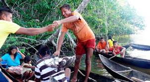
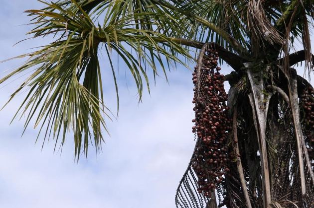

Alimentación

Su principal fuente de alimentación, al estar establecidos en el Delta del Orinoco es la pesca del morocoto y la guabina, pero también se dedican a la caza menor de roedores como la lapa y el acure, aunque también tienen plantaciones de miel y frutos silvestres. En períodos de sequía los cangrejos son su principal fuente de alimentación. El moriche es la principal fuente de alimentación de los Warao, que una vez extraída del interior del árbol, mediante un proceso bastante laborioso, es utilizado para la torta de yuruma. Pero no solo se utiliza para alimentación, sino que también el tronco de este árbol es utilizado para la confección de objetos artesanales y como complemento para la construcción, ya sea de paredes, techos, puentes… Otro uso del moriche son los arpones para pescar conocido como nahalda.

Ure, un tubérculo rico en almidón con el tiempo ha ido sustituyendo a la fécula de moriche ya que se puede cosechar durante todo el año, lo que ha ido transformando la alimentación de los waraos.